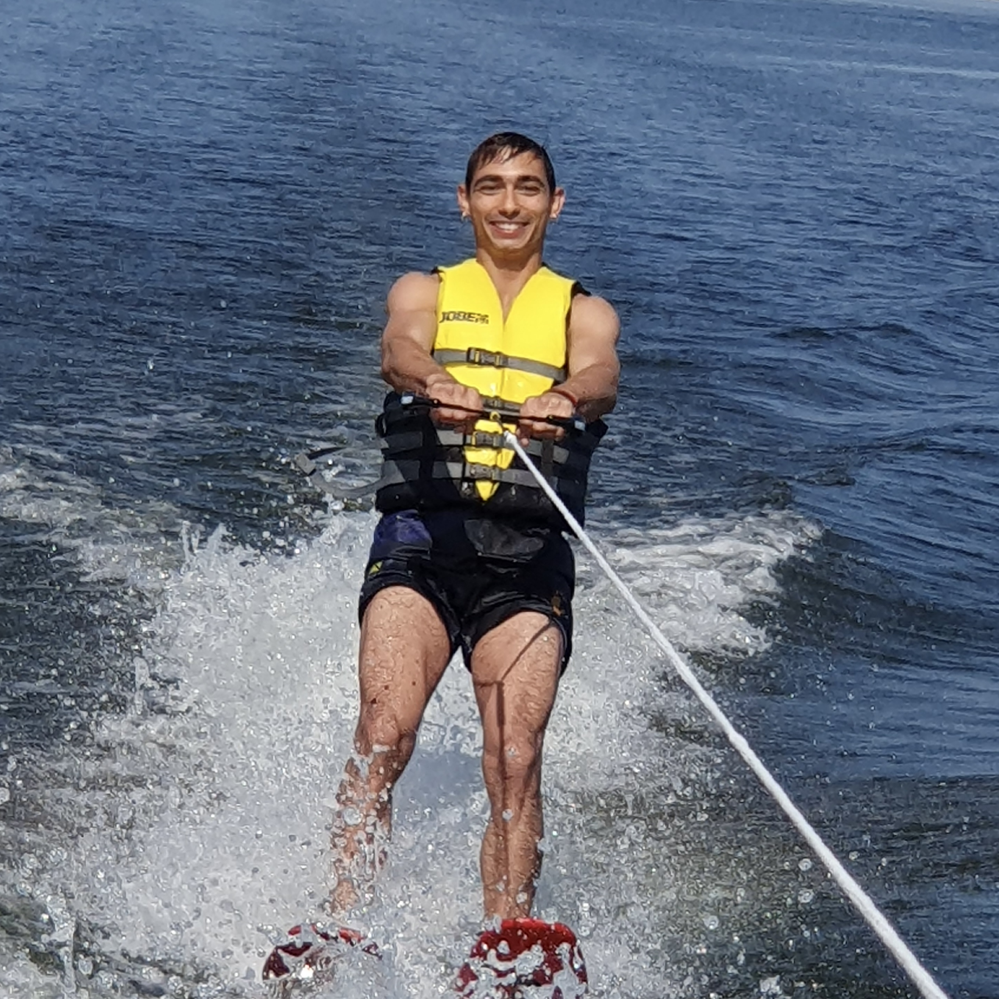
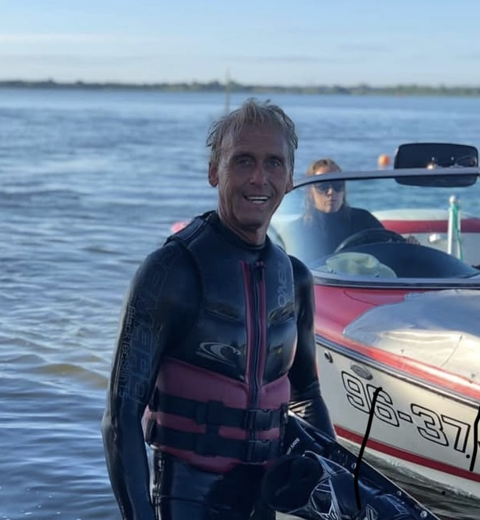
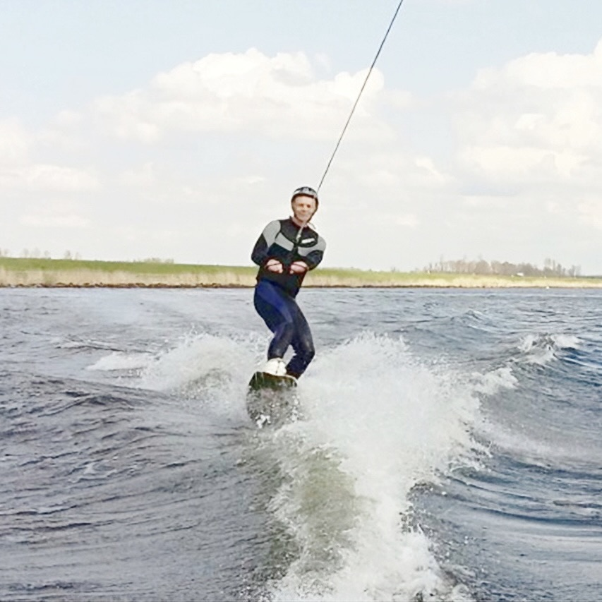
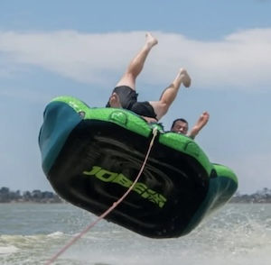
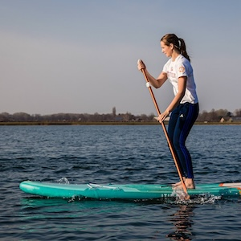

Waterskien

Meer weten
Waterski & Boarding school De Harder ligt op een unieke, luwe locatie aan het Veluwemeer. Wij hebben als doel de waterski & wakeboard sport te stimuleren en te promoten in alle facetten. De Skischool werkt met gediplomeerde coaches van de NWWB. Met deze uiterst bekwame instructeurs leren wij een ieder van jong tot oud in een handomdraai waterskien of wakeboarden. Kom eens langs, je bent van harte welkom!
Alex Clay is al ruim 30 jaar een gelicenseerde instructeur op diverse gebieden. Zoals waterskien, wakeboarden, schansspringen en nog meer watersporten. Alex doet zelf al 45 jaar aan mono skien en heeft aan veel wedstrijden en kampioenschappen meegedaan. Lees meer

Bij ons kan je terecht om talloze watersporten en leuke activiteiten uit te voeren, hierover vind je meer op onze sport en recreatie pagina's. Klik op de 'Meer weten' knop om de tarieven te bekijken.

Meer weten
Meer weten
Meer weten
Meer weten